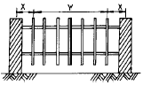
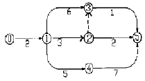
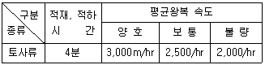
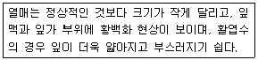
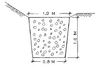

조경산업기사 (2003-03-16 기출문제)
1과목: 조경계획 및 설계
1. 토양도에 관한 설명 중 틀린 것은?(오류 신고가 접수된 문제입니다. 반드시 정답과 해설을 확인하시기 바랍니다.)
- 개략 토양도는 1:25000 축척으로 제작 되었다.
- 개략 토양도는 광범위한 지역에 대한 개발계획에 활용된다.
- 간이 삼림토양도는 1:25000 축척으로 제작 되었다.
- 간이 삼림토양도는 토양의 잠재 생산능력급수를 1급부터 5급까지 나누어 표시한다.
(정답률: 32%)

2. 옥외 휴양 행동을 좌우하는 지배인자로서 영향력이 가장 약한 기상 조사 항목은?
- 월평균 강우량
- 기온의 변도량(최고 최저 기온)
- 강우 일수
- 생물 기후의 각종 데이터(벚꽃의 개화일 등)
(정답률: 71%)
3. 전혀 관계없는 몇 조(組)의 전문가 그룹으로 하여금 유기적으로 체계화된 몇개의 계획안을 만들게 하여 그 가운데서 주민 또는 이용자가 가장 좋다고 생각하는 하나의 안(案)을 고르는 계획과정은?
- 단일형 과정
- 반복형 과정
- 연환형 과정
- 선택형 과정
(정답률: 75%)
4. 광장의 성격에 대한 설명이 잘못된 것은?
- 광장은 사회 지향적이다.
- 광장은 도시 지향적이다.
- 광장은 지역 중심적이다.
- 광장은 자연 지향적이다.
(정답률: 78%)
5. 리모트 센싱(remote sensing)이란 무엇인가?
- 원격 측정
- 컴퓨터 설계
- 정밀 설계
- 환경 심리
(정답률: 81%)
6. 리조트의 토지 이용형태는 일반적으로 어느 정도로 산정하는가?
- 숙박시설, 서비스시설 1/3, 원지 1/3, 완충녹지, 도로 1/3
- 숙박시설, 서비스시설 1/4, 원지 1/2, 완충녹지, 도로 1/4
- 숙박시설, 서비스시설 2/5, 원지 2/5, 완충녹지, 도로 1/5
- 숙박시설, 서비스시설 1/5, 원지 2/5, 완충녹지, 도로 2/5
(정답률: 74%)
7. 어린이 4 - 5인이 함께 놀 수 있는 모래밭의 크기는 얼마인가?
- 2.5 - 3.0 m2
- 3.1 - 4.5 m2
- 4.6 - 6.5 m2
- 7.5 - 8.0 m2
(정답률: 36%)
8. 입면도(elevation)의 설명이 잘못된 것은?
- 어느 한 방향으로부터 수평 투영한 도면이다.
- 어느 한 방향으로부터 수직 투영한 도면이다.
- 지상부의 생김새나 고저관계를 알아보는데 편리하다.
- 측면도, 정면도, 배면도 등이 이에 해당한다.
(정답률: 53%)
9. 다음 그림에서 휀스(fence)의 각 파이프 간격이 30cm로 동일할 때 Y의 치수표시가 옳은 것은 ? (단위:mm)

- 6 x 300 = 1,800
- 7 x 300 = 2,100
- 8 x 300 = 2,400
- 9 x 300 = 2,700
(정답률: 75%)
10. 공원의 동선 계획에 관한 설명이다. 가장 옳은 것은?
- 가급적 단순하고 명쾌해야 하며 성격이 다른 동선은 반드시 분리해야 한다.
- 시각적으로 중복되지 않는 경우를 제외하고는 가급적 동선이 교차하도록 한다.
- 이용도가 높은 동선을 우회시키는 것이 좋다.
- 흐름이 일정한 동선은 꺾어져도 좋다.
(정답률: 72%)
11. 소각로의 위치 선정에 있어서 유의해야 할 사항으로 옳지 않은 것은?
- 이용자의 시선에 잘 띄는 곳을 선정한다
- 가급적 교목으로 둘러 쌓여 있도록 한다
- 분진, 연기, 악취가 이용자에게 미치지 않도록 한다
- 쓰레기 운반 및 소각후 재를 처리하기 용이한 곳을 선정한다
(정답률: 80%)
12. 점(點)적인 경관 요소라고 볼 수 없는 것은?
- 외딴집
- 전답(田畓)
- 정자목(亭子木)
- 잔디밭의 조각
(정답률: 67%)
13. 조경재료를 배열했을 때 형태나 색채에 있어서 양적으로나 혹은 길이와 폭의 대소에 따라 일정한 크기의 비율로 증가 또는 감소된 상태로 배치될 때 이것의 미적원리를 무엇이라 하는가?
- 비례(Proportion)
- 대비(Contrast)
- 반복(Repetition)
- 조화(Harmony)
(정답률: 85%)
14. 르.꼬르뷰지에(Le Corbusier)가 신장 183cm인 인간의 바닥에서 배꼽까지의 높이 113cm 를 기본으로 하여 만든 디자인용 인간척도(人間尺度)를 무엇이라고 하는가?
- 모듈러(Le Modular)
- 피보나찌 수열
- 황금율(黃金律)
- 이척(裏尺)
(정답률: 68%)
15. 우리나라 현행 법규상의 도시공원에 해당하지 않는 것은?
- 어린이공원
- 운동공원
- 근린공원
- 도시자연공원
(정답률: 58%)
16. 정원양식과 그 양식이 크게 발달한 시대가 서로 맞는 것은?
- 영국 튜더조의 정원양식 - 18세기 말
- 프랑스 평면 기하학식 - 17세기
- 이탈리아 노단 건축식 - 19세기
- 바로크 양식 - 16세기 초
(정답률: 64%)
17. 조경계획과 조경설계를 구분할 경우 조경계획에 관련된 사항은?
- 문제의 발견에 관련
- 주관적, 직관적, 창의성과 예술성이 크게 강조
- 개인의 능력, 노력, 체험, 미적 감각에 의존
- 창조적 구상이 요구
(정답률: 40%)
18. 조경설계의 목적과 목표를 예를 들어 설명하고 있다. 광장입구를 대상으로 설계작업을 진행하는 경우에 목적(goal)에 해당되는 것은?
- 스케일 상으로 공적(public)인 입구를 만든다
- 광장으로 들어가는 입구는 뚜렷이 알아볼 수 있도록 한다
- 인식하기 쉽도록 입구의 바닥포장에 변화를 준다
- 입구로부터 광장으로의 시야는 어느 정도 트이도록 한다
(정답률: 50%)
19. 음수전 설계시 꼭지가 위로 향한 성인용 음수전의 높이로 알맞은 것은?
- 35 ∼ 45cm
- 45 ∼ 50cm
- 50 ∼ 65cm
- 65 ∼ 80cm
(정답률: 52%)
20. 주택정원의 기능을 분할 할 때 프라이버시가 최대한 보장되어야 하는 공간은?
- 전정
- 주정
- 후정
- 작업정
(정답률: 75%)
2과목: 조경식재
21. 식재수종 선정 시 환경과의 관계에서 고려해야할 요소가 아닌 것은?
- 식물이 생육하는데 필요한 광선 요구도
- 대기오염에 의한 공해나 염해, 풍해, 설해 등 각종 환경피해에 대한 적응성
- 수목의 맹아, 신록, 결실, 홍엽, 낙엽 등의 계절적 현상
- 식물의 천연분포, 식재분포와 관련 되어지는 기온
(정답률: 44%)
22. 근원직경이 15cm인 수목을 4배 접시분으로 분뜨기를 한 경우 지상부를 제외한 분의 중량은 얼마인가 ?(단, 뿌리분의 체적은 접시분인 경우 V=π .r3으로 구하고, 뿌리분의 단위 중량은 1.3t/m3 이고, 원주율 π 는 3.14로 한다.)
- 0.11 ton
- 0.21 ton
- 0.25 ton
- 0.32 ton
(정답률: 44%)
23. 우리나라에서 방향(芳香) 식물원의 효과를 거둘 수 있도록 식재공간을 조성하고자 한다. 다음 중 적당하지 않은 것은?
- 방향식물은 한두그루 정도로도 큰 효과를 기대할 수 있다.
- 식재 위치는 창가, 현관 또는 통로 주변이 효과적이다.
- 옥외의 개방된 공간에는 장미 터널식, 생울타리식으로 군식해야 효과적이다.
- 향기를 연중 즐길 수 있도록 배식되어야 효과적이다.
(정답률: 56%)
24. 공장을 중심으로 한 주변의 녹지대 조성에 대한 설명 중 적당하지 않은 것은?
- 녹지대의 조성 목적은 매연,유독가스,분진등을 인근 주거지역에 파급 낙하하는 것을 막고 여과기능을 기대하는데 있다.
- 배식계획에 있어서는 공장측으로부터 키가 큰 나무 중간나무,키가 작은나무 순으로 배식한다.
- 배식수종은 상록 활엽수를 양측에, 침엽수를 중앙부에 배식하고 나뭇잎이 서로 접촉할 정도로 심는다.
- 공장주변의 주거지역에는 광역적인 녹지대를 조성하고 교목성 상록수를 심는 것이 바람직하다.
(정답률: 67%)
25. 그늘을 이용할려는 정자목(亭子木)으로 가장 적당한 나무는?
- 목련
- 붉나무
- 단풍나무
- 회화나무
(정답률: 62%)
26. 대상물을 눈에 띄지 않도록 하는 방법인 카무플라즈는 의장수법, 또는 미채수법이라고도 하는데, 이 방법을 이용하는 수법 중 가급적 피해야 하는 것은?
- 인공조성지에 식재하는 수법
- 경사의 법면에 잔디를 입혀 녹화하는 수법
- 노출암석이나 몰탈공법으로 처리된 면을 녹색으로 도색 처리하는 수법
- 담쟁이 등의 벽면 녹화 수법
(정답률: 67%)
27. 남부지방에서 속성 재배한 수목을 중부지방으로 이식하였을 때 하자율이 높게 나타나는 것 중 맞는 것은?
- 운반거리가 멀기 때문.
- 가지치기를 많이 했기 때문.
- 기후 환경 조건이 맞지 않기 때문.
- 관수를 많이 했기 때문.
(정답률: 97%)
28. 고속도로의 사고방지를 위한 식재가 아닌 것은?
- 차광식재
- 조화식재
- 명암순응식재
- 진입방지식재
(정답률: 64%)
29. 목련류(magnolia) 중에서 상록성인 것은?
- 함박꽃나무
- 태산목
- 일본목련
- 자목련
(정답률: 76%)
30. 수목의 자연수형을 좌우하는 주요 인자라고 볼 수 없는 것은?
- 수간의 모양
- 수관의 모양
- 수엽의 모양
- 수지의 모양
(정답률: 50%)
31. 다음 조합 중 상목,중목,하목을 고루 갖춘 조합은?
- 전나무 - 단풍나무 - 산철쭉
- 전나무 - 칠엽수 - 자귀나무
- 전나무 - 돈나무 - 꽝꽝나무
- 전나무 - 소나무 - 회양목
(정답률: 58%)
32. 다음 중 전정에 잘 견디고 단식 또는 군식용으로 쓰이며 10월경부터 붉은 열매를 맺는 감탕나무과 식물은?
- 아왜나무
- 돈나무
- 사철나무
- 호랑가시나무
(정답률: 57%)
33. 내염성(耐鹽性)이 가장 강한 수종은?
- 비자나무
- 전나무
- 단풍나무
- 목련
(정답률: 60%)
34. 다음 중 학명이 틀린 것은?
- 배롱나무(Lagerstroemia indica)
- 소나무 (Pinus densiflora)
- 느티나무(Zelkova serrata)
- 능수버들(Salix babylonica)
(정답률: 60%)
35. 변화된 입지조건 하에서 인간에 의한 영향이 제거 되었다고 가정할 때, 앞으로 성립이 예상되는 식생을 가르키는 용어는?
- 자연식생(natural vegetation)
- 원식생(original vegetation)
- 대상식생(substitute vegetation)
- 잠재자연식생(potential natural vegetation)
(정답률: 38%)
36. 원형에서는 중심점, 사각형에서는 대각선의 교차점이나 4개의 모서리에, 직선에서는 중점이나 황금율에 의한 분할점 등에 심는 식재 방법은?
- 조화 및 연계로서의 식재
- 요점 식재
- 기교로서의 식재
- 실용식재
(정답률: 70%)
37. 조경수목의 연해(煙害)증상이 아닌 것은?
- 낙엽
- 반문(斑紋)
- 천공(穿孔)
- 표백
(정답률: 60%)
38. 가로막기 식재의 기능에 맞지 않는 것은?
- 통풍조절
- 진입방지
- 녹음조성
- 일사의 조절
(정답률: 60%)
39. 주행중의 운전자가 도로의 선형 변화를 미리 판단할 수 있도록 수목을 식재하는 수법으로 도로의 곡률반경이 700m이하가 되는 작은 곡선부에서 반드시 조성해야 하는 식재는?
- 명암순응식재
- 쿠션식재
- 시선유도식재
- 지표식재
(정답률: 70%)
40. 동양적인 수목배식에서 가장 이상적인 형태는?
- 부등변 삼각형
- 2등변 삼각형
- 5각형
- 사다리꼴형
(정답률: 62%)
3과목: 조경시공
41. 다음 네트워크 공정표를 보고 크리티칼 패스(CriticalPath)를 나타내는 것은?

- ⓞ-①-③-⑤
- ⓞ-①-②-④-⑤
- ⓞ-①-④-⑤
- ⓞ-①-②-⑤
(정답률: 55%)
42. 품질관리에 관한 사항으로 맞지 않는 것은?
- 원가절감을 위한 수단 중 하나이다.
- 공사목적물의 품질유지를 위한 것이다.
- 생산성을 향상시킬 수 있다.
- 공정관리를 촉진하여 품질을 향상시킨다.
(정답률: 34%)
43. 플랜터 설계 및 시공에 대한 설명 중 옳지 않은 것은?
- 양호한 배수가 이뤄지도록 한다.
- 벽체의 방수는 프랜터의 외부에 해야 한다.
- 주위의 경관을 고려한 벽체 재료를 사용한다.
- 뿌리분의 밑에는 자갈층을 반드시 두어야 한다.
(정답률: 60%)
44. 수량 산출시 수목 할증율은 얼마까지 줄 수 있는가?
- 5％
- 7％
- 10％
- 15％
(정답률: 73%)
45. 옹벽의 시공상 유의사항이 아닌 것은?
- 옹벽의 전면경사가 앞으로 숙이게 되는 것을 피해야 한다.
- 겨울에 동상의 피해를 입지 않도록 지면에서 1.0m이상에 기초를 둔다.
- 옹벽 되메우기는 옹벽 구체가 완전히 양생된 후 시행한다.
- 옹벽 표면의 필요장소에 신축줄눈을 두고 철근은 그대로 연결되도록 놓아 둔다.
(정답률: 53%)
46. 콘크리트 양생에 관한 기술 중 바르게 된 것은?
- 콘크리트의 노출면은 5일 이상 습윤한 상태로 되어야 한다
- 양생 중에 경화촉진을 시키기 위하여 건조시키는 것이 좋다
- 양생 온도는 10℃이하가 되면 경화가 진행되지 않는다
- 경화촉진제로서 알미늄 분말이 있다
(정답률: 45%)
47. 물시멘트비가 40%일 때, 시멘트량이 200㎏이었다면 단위 수량은?
- 40㎏
- 50㎏
- 80㎏
- 100㎏
(정답률: 57%)
48. Q=1/360 CiA는 다음의 어느 것을 계산하는 식인가?
- 토압(土壓)의 계산식
- 옹벽의 안정 계산식
- 유속(流速) 계산식
- 우수유출량의 계산식
(정답률: 68%)
49. 반력(反力)에 관한 다음 기술 중 옳지 않은 것은?
- 구조물에 하중이 작용하면 지점에 반력이 생긴다.
- 구조물의 외력은 반력을 제외한 하중을 말한다.
- 반력의 종류에는 수평반력, 수직반력, 모멘트반력, 비틀림반력이 있다.
- 구조물은 하중과 반력에 의해 힘의 평형을 이루고 있다.
(정답률: 52%)
50. 평떼 1매당 떼꽂이 2개씩 사용할 때 평떼 1m2당 필요로하는 떼꽂이 수는?
- 11본
- 13본
- 15본
- 22본
(정답률: 43%)
51. 경화시간과 수화작용(水和作用)이 빨라 조기 강도가 크고 발열량이 많아 한지(寒地), 긴급공사에 적당한 시멘트는?
- 포오틀랜드 시멘트
- 조강 포오틀랜드 시멘트
- 중용열 포오틀랜드 시멘트
- 실리카 시멘트
(정답률: 60%)
52. 토지조성계획내에 포함되지 않는 것은?
- 토사의 절취계획
- 토사의 성토계획
- 토사유출 방지계획
- 토공량의 계산
(정답률: 45%)
53. 우리나라에서의 고대 전통수법으로 제조된 특수벽돌은?
- 와석(臥石)
- 판와(板瓦)
- 전(塼)
- 대석(臺石)
(정답률: 42%)
54. 식재할 표토 20m3를 80m 지점으로 손수레를 이용하여 운반할 때 하루의 운반 횟수는 몇 회인가? (단, 운반로의 조건은 보통이고, 작업시간은 450분, 적재, 적하시간, 왕복속도는 아래와 같다.)

- 25.0회
- 43.6회
- 57.4회
- 62.8회
(정답률: 27%)
55. 원로(園路)나 주차장을 콘크리트로 포장할 때 콘크리트 구조 보강용으로 사용되는 것은?
- 메탈라스
- 부직포
- 지오그리드 섬유
- 와이어 메시
(정답률: 57%)
56. 간단한 공사의 공정을 단순비교 할 때 흔히 쓰이는 공정관리 기법은?
- 횡선식 공정표(Bar Chart)
- 네트워크(Net work)공정표
- 기성고 공정곡선
- 칸트차트( Gantt Chart)
(정답률: 56%)
57. 경사진 주차장입구, 계단의 상, 하단 진입로의 입구 등에 주로 설치하여 경사진 지역을 면적(面的)으로 배수하기 위한 시설은?
- 집수정(Catch basin)
- 트렌치(Trench)
- 측구(Side gutter)
- 우수받이(Street inlet)
(정답률: 52%)
58. 높이 1.2m, 길이 6m, 두께 19㎝의 벽돌 담장을 1.0B로 설치할 때 소요되는 벽돌은 몇 매인가 ?(단, 표준형 벽돌 쌓기시 1.0B는 149매/m2를 적용하고, 할증율은 3%를 고려한다.)
- 540매
- 556매
- 1,073매
- 1,1⑤매
(정답률: 69%)
59. 다음 조경재료 중 할증율을 가장 높게 채택하는 것은?
- 포장용 시멘트, 아스팔트
- 마름돌 시공용의 원석, 석재판 붙임용 부정형돌
- 목재 판재, 조경수목, 잔디
- 페인트공의 도료
(정답률: 63%)
60. 토양의 구조에 대한 설명 중 맞는 것은?
- 판상 구조는 수직 배수가 잘되며 충적토에서 발견할 수 있다.
- 주상구조는 수직배수가 잘 안되며, 찰흙의 함량이 많은 표토에서 보기 쉽다.
- 괴상구조는 각괴(角塊)와 원괴(圓塊)로 나누어지며 표토에서 많이 발견된다.
- 입상구조는 서로 연하여 겹치거나 쌓여서 입단(粒團)사이의 공극에 물이 저장되어 생물생육에 적합한 조건이다.
(정답률: 65%)
4과목: 조경관리
61. 멀칭(mulching)의 효과를 설명한 것이다. 잘못된 것은?
- 토양수분 유지
- 토양 비옥도 증진
- 토양의 굳어짐 방지
- 태양열의 복사와 반사 증가
(정답률: 80%)
62. 조경관리를 위하여 관리주체가 직접 운영관리하는 직영 방식의 좋은 점은?
- 전문가를 합리적으로 이용할 수 있다.
- 인건비가 싸게 든다.
- 규모가 큰 시설 등의 관리를 효율적으로 할 수 있다.
- 관리책임이나 책임소재가 명확하다.
(정답률: 60%)
63. 다음 중 시설물 보수 싸이클이 가장 짧은 것은?
- 모래밭 모래 보충
- 놀이 시설물 철물도장
- 콘크리트 야외탁자 도장
- 놀이 시설물 목재도장
(정답률: 48%)
64. 새잎과 새가지가 생장하기 시작한 후에 수목을 이식 하였다. 이런 경우에 지엽(枝葉)의 수분 증발을 억제 하여 활착을 도와 주기 위해 처리하는 약제는 다음중 어느 것인가?
- 도포제
- 증산억제제
- 제초제
- 살충제
(정답률: 58%)
65. 조경 관리계획의 수립절차 순서로 가장 옳은 것은?
- 관리목표의 결정-관리계획의 수립-관리조직의 구성
- 관리계획의 수립-관리목표의 결정-관리조직의 구성
- 관리조직의 구성-관리목표의 결정-관리계획의 수립
- 관리목표의 결정-관리조직의 구성-관리계획의 수립
(정답률: 67%)
66. 각종 가로등 중에서 가장 수명이 긴 것은?
- 수은등
- 백열등
- 할로겐등
- 나트륨등
(정답률: 62%)
67. 다음 현상은 어떤 양분이 결핍된 것인가?

- N
- P
- K
- Mg
(정답률: 32%)
68. 묘포지의 토양소독을 실시하기에 가장 적합한 약품은 다음 중 어느 것인가?
- 클로로피크린
- P.C.P
- 보르도액
- 황산동
(정답률: 39%)
69. 유희시설물 중 콘크리트재의 보수에 관한 내용에 맞지 않는 것은?
- 콘크리트 보수면의 도장은 3주이상 기간을 두어 표면이 충분히 건조한 후 칠을 한다.
- 미관을 위한 재도장은 3년에 1회정도 실시한다.
- 콘크리트의 기초부분이 노출되어 있는 경우에는 성토 등을 행한다.
- 파손부분의 보수에는 원설계시보다 시멘트의 양을 훨씬 많이 배합한 콘크리트를 타설한다.
(정답률: 64%)
70. 다음 중 잔디밭의 잡초가 아닌 것은?
- 크로바
- 바랭이
- 매듭풀
- 부들
(정답률: 69%)
71. 배수불량한 도로의 관리를 위해 도로 양측으로 총연장 4km 에 그림과 같은 측구를 굴착하고 자갈을 채우려 한다. 자갈량은?

- 3600m3
- 1800m3
- 900m3
- 450m3
(정답률: 53%)
72. 생육환경 조절을 통한 수목해충 예방법이 아닌 것은?
- 수목 근원부 토양에 멀칭 처리한다.
- 적절히 솎아 베는 간벌을 실시한다.
- 천적 서식지를 조성해 천적을 증식한다.
- 우기 전에 배수로를 정비한다.
(정답률: 32%)
73. 목재의 내구성을 저해하는 요인이 아닌 것은?
- 사용으로 인한 마모 충격
- 균 또는 박테리아에 의한 부식
- 인문, 사회적 조건
- 곤충 또는 해충에 의한 식해
(정답률: 81%)
74. 다음은 잡초 방제에 대한 설명이다. 가장 적당하지 않은 것은?
- 짚 멀칭도 잡초 방제의 효과가 있다.
- 제초제에는 2.4-D,시마네제,파미드제 등이 있다.
- 농약과 비료를 함께 뿌리는 것이 노력 절감이 되므로 되도록 혼용하여 사용한다.
- 시기적으로 몇 가지 제초제를 체계적으로 사용한다.
(정답률: 64%)
75. 다음의 수목관리 계획 중 정기적으로 수행하는 작업이 아닌 것은?
- 토양 개량
- 전정
- 병해충 방제
- 지주목 보수
(정답률: 56%)
76. 흰불나방 구제 방법 중 가장 옳은 것은?
- 잠복소 설치
- 기계유제 살포
- 통풍이 잘 되게 한다
- 피해 낙엽 제거
(정답률: 43%)
77. 옹벽의 변화상태에 작용하는 원인으로 가장 관계가 적은 것은?
- 지반의 침하
- 기초의 강도저하
- 하중의 감소
- 지반의 이동
(정답률: 60%)
78. 한국잔디에 흔히 발생하는 것으로 잎이나 잎 끝에 등황색의 반점이 생기고 반점으로부터 황갈색 가루가 발생하는 병은?
- 브라운 패치(brown patch)
- 달라 스폿(dollar spot)
- 녹병(rust)
- 황화현상
(정답률: 33%)
79. 년간 시설물의 정비 및 보수계획을 세울 때 가장 많은 횟수의 점검과 정비, 보수가 요구되는 것은?
- 산책로의 콘크리트 포장상태
- 오수관의 누수 및 흐름상태
- 회전유희시설의 회전축 및 베어링 상태
- 안내판의 기초 및 기둥의 체결 상태
(정답률: 53%)
80. 전정시의 작업 방법으로 옳지 못한 것은?
- 상부의 주지부터 전정한다.
- 상부는 강하게 하부는 약하게 전정한다.
- 수세가 강한 가지는 강하게 약한가지는 약하게 한다.
- 상.하부를 전정한 다음 수관 내부가지를 전정한다.
(정답률: 44%)